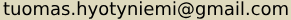
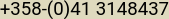

Vuoropäällikkö
William K. Kurvi · Vakituinen
12 / 2021 — 06 / 2023 · 1 vuosi 7 kk
Helsinki
Tehtäviin kuului tuotevalikoiman suunnittelu, kehitys ja ylläpito; varaston ylläpito sekä vuoroesimiestyö.

Tuomas Hyötyniemi
Haaga-Helian ammattikorkeakoulu (käynnissä)


Olen tuore tietojenkäsittelyn opiskelija ja intohimoinen ohjelmoija Haaga-Helian ammattikorkeakoulusta.
Rakastan ohjelmointia: sen logiikkaa ja koodin estetiikkaa. Myös pilvipalvelu-teknologia ja tietoturva ovat vahvoja kiinnostukseni kohteita.
Ravintola-alalta minulla on noin 20 vuoden kokemus, joista suurin osa vuoropäällikkönä, mikä on vahvistanut tiimityöskentely- ja johtamistaitojani.
William K. Kurvi · Vakituinen
12 / 2021 — 06 / 2023 · 1 vuosi 7 kk
Helsinki
Tehtäviin kuului tuotevalikoiman suunnittelu, kehitys ja ylläpito; varaston ylläpito sekä vuoroesimiestyö.
Suomalainen Olutravintola Villi Wäinö · Vakituinen
01 / 2009 — 08 / 2020 · 11 vuotta 8 kk
Helsinki
Tarjoilija kaksi vuotta, sittemmin vuoropäällikkö. Tehtäviin kuului tuotevalikoiman kehitys, varaston ylläpito; vuoroesimiestyö ja henkilökunnan perehdyttäminen; markkinointimateriaalin sekä internet-sivujen kehitys ja ylläpito.
Hangon Casino · Sesonkityöläinen
05 / 2008 — 09 / 2008 · 5 kk
Hanko
Tehtävänä baaritarjoilu ja tuotekehitys.
Rantasipi Rukahovi · Sesonkityöläinen
10 / 2007 — 04 / 2008 · 7 kk
Kuusamo
Tehtävänä baaritarjoilu.
RantaSumppu · Sesonkityöläinen
05 / 2007 — 10 / 2007 · 6 kk
Hailuoto
Tehtäviin kuului baarin ja keittiön hoitaminen, vastaanottovirkailu, aluevalvonta sekä huoltotoimet.
Ufo-Viihde Oy · Keikkatyöläinen
09 / 2006 — 06 / 2007 · 10 kk
Lappi
Erinäisissä lapin ravintoloissa tehtävinä baaritarjoilu, karaoken vetäminen ja DJ:nä toimiminen.
RantaSumppu · Sesonkityöläinen
06 / 2006 — 10 / 2006 · 5 kk
Hailuoto
Tehtäviin kuului baarin ja keittiön hoitaminen, vastaanottovirkailu, aluevalvonta sekä huoltotoimet.
Ufo-Viihde Oy · Keikkatyöläinen
01 / 2006 — 06 / 2006 · 6 kk
Lappi
Erinäisissä lapin ravintoloissa tehtävinä baaritarjoilu, karaoken vetäminen ja DJ:nä toimiminen.
Staff-point, Live Nation, Brown Book, Enjoy · Keikkatyöläinen
01 / 2004 — 01 / 2009 · 5 vuotta
Rovaniemi, Oulu ja Helsinki
Erinäisissä ravintoloissa tehtävinä baaritarjoilu.